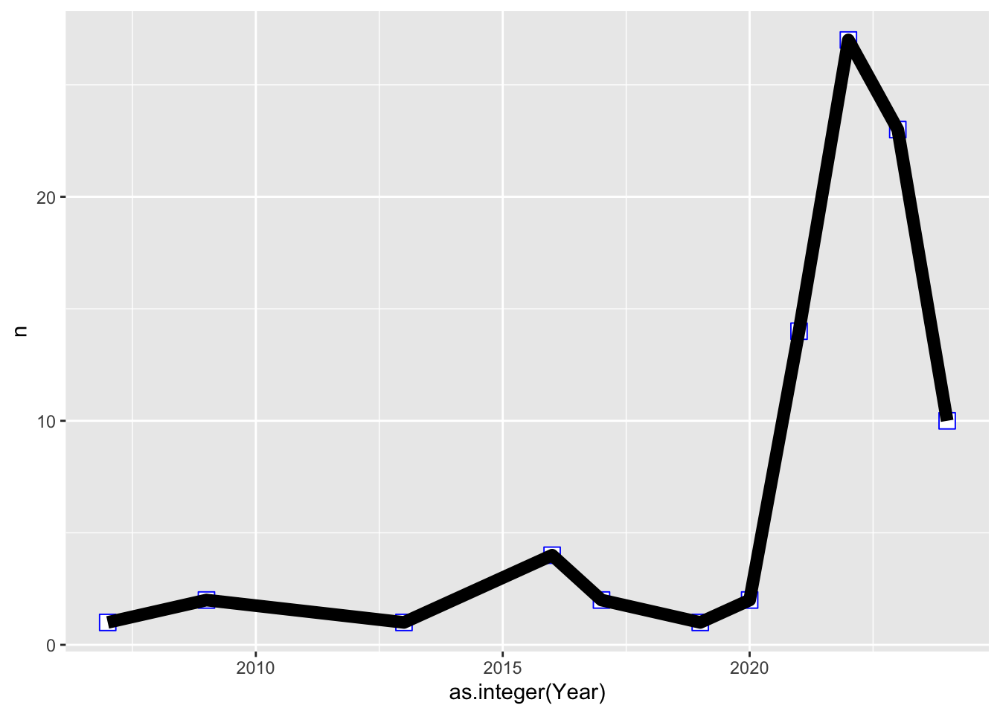

Geom_line
Fecha de la ultima revisión
## [1] "2022-12-12"

library(ggversa)
library(ggplot2)
library(gt)Gráficos de línea
Gráfico de línea básico con geom_line
Los gráficos de línea se usan frecuentemente cuando hay una variable de datos continuos ordenada secuencialmente, como las series en tiempo (años, hora, minutos, u otras secuencias). En los ejemplos que veremos a continuación se muestra la relación entre la detección del cáncer de tiroides en EE. UU. entre los años 1975 y 2012, su aumento y el nivel de mortandad.
En la Figura se muestra el cambio en número de casos de cáncer de tiroides por cada 100,000 habitantes. La columna Year, año, es una variable numérica, y típicamente no se gráfica correctamente porque no se toma como numérica automáticamente. Es necesario identificarla como que contiene valores enteros usando la opción as.integer.
En primer lugar, crearemos un nuevo data.frame para agrupar solamente los nuevos casos de cáncer. Para crear un data.frame solamente con esos datos se usa la opción which, con el siguiente procedimiento:
subconjunto del_archivo[which( el_archivo$la_variable == “la variable de interés”),]
Note que la variable de interés es un conjunto de valores en “la_variable” o es una categoría, como en este caso, nuevos casos (o “New Cases”). El símbolo “==” significa “que sea exactamente igual a…”
Aquí vemos parte de los datos originales:
library(ggversa)
Tiroide## Year Cases Rate
## 1 1975 New Cases 4.8
## 2 1976 New Cases 4.8
## 3 1977 New Cases 5.4
## 4 1978 New Cases 5.1
## 5 1979 New Cases 4.5
## 6 1980 New Cases 4.3
## 7 1981 New Cases 4.4
## 8 1982 New Cases 4.6
## 9 1983 New Cases 4.7
## 10 1984 New Cases 4.8
## 11 1985 New Cases 5.1
## 12 1986 New Cases 5.3
## 13 1987 New Cases 5.0
## 14 1988 New Cases 4.9
## 15 1989 New Cases 5.4
## 16 1990 New Cases 5.5
## 17 1991 New Cases 5.5
## 18 1992 New Cases 5.9
## 19 1993 New Cases 5.6
## 20 1994 New Cases 6.1
## 21 1995 New Cases 6.2
## 22 1996 New Cases 6.5
## 23 1997 New Cases 6.8
## 24 1998 New Cases 7.0
## 25 1999 New Cases 7.3
## 26 2000 New Cases 7.6
## 27 2001 New Cases 8.3
## 28 2002 New Cases 9.2
## 29 2003 New Cases 9.6
## 30 2004 New Cases 10.1
## 31 2005 New Cases 11.0
## 32 2006 New Cases 11.3
## 33 2007 New Cases 12.4
## 34 2008 New Cases 13.2
## 35 2009 New Cases 14.4
## 36 2010 New Cases 13.9
## 37 2011 New Cases 14.8
## 38 2012 New Cases 14.9
## 39 1975 Deaths_US 0.5
## 40 1976 Deaths_US 0.6
## 41 1977 Deaths_US 0.6
## 42 1978 Deaths_US 0.5
## 43 1979 Deaths_US 0.5
## 44 1980 Deaths_US 0.5
## 45 1981 Deaths_US 0.5
## 46 1982 Deaths_US 0.5
## 47 1983 Deaths_US 0.4
## 48 1984 Deaths_US 0.5
## 49 1985 Deaths_US 0.4
## 50 1986 Deaths_US 0.5
## 51 1987 Deaths_US 0.5
## 52 1988 Deaths_US 0.4
## 53 1989 Deaths_US 0.4
## 54 1990 Deaths_US 0.4
## 55 1991 Deaths_US 0.4
## 56 1992 Deaths_US 0.5
## 57 1993 Deaths_US 0.5
## 58 1994 Deaths_US 0.4
## 59 1995 Deaths_US 0.4
## 60 1996 Deaths_US 0.5
## 61 1997 Deaths_US 0.5
## 62 1998 Deaths_US 0.4
## 63 1999 Deaths_US 0.5
## 64 2000 Deaths_US 0.5
## 65 2001 Deaths_US 0.5
## 66 2002 Deaths_US 0.5
## 67 2003 Deaths_US 0.4
## 68 2004 Deaths_US 0.5
## 69 2005 Deaths_US 0.5
## 70 2006 Deaths_US 0.5
## 71 2007 Deaths_US 0.5
## 72 2008 Deaths_US 0.5
## 73 2009 Deaths_US 0.5
## 74 2010 Deaths_US 0.5
## 75 2011 Deaths_US 0.5
## 76 2012 Deaths_US 0.5unique(Tiroide$Cases)## [1] New Cases Deaths_US
## Levels: Deaths_US New CasessubTiroide=Tiroide[which(Tiroide$Cases=="New Cases"),]
gt(head(subTiroide))| Year | Cases | Rate |
|---|---|---|
| 1975 | New Cases | 4.8 |
| 1976 | New Cases | 4.8 |
| 1977 | New Cases | 5.4 |
| 1978 | New Cases | 5.1 |
| 1979 | New Cases | 4.5 |
| 1980 | New Cases | 4.3 |
El procedimiento para preparar el gráfico de tiroides se presenta a continuación:
ggplot(subTiroide, aes(x=as.integer(Year), y=Rate))+
geom_line(size=1, colour="red")+
annotate("text", x= 1985,y= 9, size= 3,
label="Nuevos casos de \n cancer \n de Tiroides", color="black")+
guides(color="none")+
ylab("Números de nuevos casos\n de cancer de Tiroides \n por 100,000 habitantes")+
xlab("Años")+
theme(axis.title=element_text(size=8,face="italic"))
Note que se utilizó la función annonate para escribir información sobre el gráfico. Esta función será discutida con más detalle más adelante.
Gráfico con múltiples líneas con geom_line
A veces es importante comparar dos o más secuencias de datos. Eso se mostrará en la Figura continuando con el mismo ejemplo de tiroides anterior pero esta vez se le añadirá la razón de mortandad por tiroidismo en EEUU en el mismo gráfico. Usando la función group= identifica cual son los grupos, si hubiese más de dos grupos hubiese una linea para cada grupo. Lo que se observa es que aunque hay mucha más gente que es diagnosticada con cáncer de la tiroides, la proporción de gente que muere de este tipo de cáncer es consistente a través del tiempo.
ggplot(Tiroide, aes(x=as.integer(Year),
y=Rate, group=Cases, color=Cases))+
geom_line(size=2)+
annotate("text", x= 1990,y= 8, size=4,
label="Nuevos casos")+
annotate("text", x= 2000,y= 1, size= 4,
label="Mortandad")+
guides(color="none")+
ylab("Números de nuevos casos\n por 100,000 habitantes")+
xlab("Años")+
theme(axis.title=element_text(size=10,face="bold"))
La función annonate nos permitió añadir la descripción Mortandad a la línea inferior en forma de texto text a la altura del punto 2000 en el eje de X y a la altura del punto 1 en el eje de Y. De igual manera se hizo con la descripción Nuevos Casos en la coordenada (1990, 8).
Gráfico de líneas con ejes expandidos con geom_line
Muchas veces el intervalo de la escala de los ejes no es el óptimo. Continuando con el ejemplo anterior, modificamos el eje de X en la Figura para que incluya el último año (el último valor de la secuencia en el eje de X). Para ello se indica en el mismo código que el límite de X en el eje se vea a intervalos de 10 años con la función xlim. Note que para expandir el eje de Y se usaría la misma técnica.
ggplot(Tiroide, aes(x=as.integer(Year), y=Rate,
group=Cases, color=Cases))+
geom_line(size=2)+
annotate("text", x= 1990,y= 10, size=4,
label="Nuevos casos")+
annotate("text", x= 1995,y= 1, size= 4,
label="Mortandad")+
guides(color="none")+
ylab("Razón")+
xlab("Años")+
xlim(min(Tiroide$Year-5), max(Tiroide$Year+6))+ # expandir los ejes
theme(axis.title=element_text(size=14,face="bold"))
Gráfico de líneas con los puntos añadidos con geom_line
A veces nos interesa que la línea muestre los puntos que la componen. En el próximo ejemplo, lo mostraremos nuevamente utilizando el ejemplo anterior de tiroides. A continuación el código modificado que muestra ese efecto añadiendo geom_point:
ggplot(Tiroide, aes(x=as.integer(Year), y=Rate,
group=Cases,
color=Cases))+
geom_line(size=1)+
annotate("text", x= 1990,y= 8, size=4,
label="Nuevos casos")+
annotate("text", x= 2000,y= 2, size=4,
label="Mortandad")+
guides(color="none")+
ylab("Razón")+
xlab("Años")+
geom_point(color="black", size=.5)+
theme(axis.title=element_text(size=10,face="bold"))
Los puntos son variados y representado por un número (0 al 24) o un símbolo. Por ejemplo para utilizar los puntos en una gráfica se usa la función

Los simbolos para las gr'aficas de puntos
Gráfico de línea con los puntos en otro estilo con geom_line
Para cambiar el estilo de los puntos en un gráfico de línea se usan los parámetros size, shape, color y fill. Como ya habrá notado, estas alternativas para modificar la apariencia de los gráficos son comunes en casi todos los tipos de gráficos en ggplot2. La forma shape de los puntos predeterminada es un círculo con tamaño de 2, size=2. La opción de fill (para rellenar el punto con un color específico) es aplicable solamente al parámetro shape con valor de 21 al 25.
Un punto importante que hay que observar es que si las líneas y los puntos son de diferentes colores, se tienen que especificar los puntos con geom_point después de la línea con geom_line ya que ggplot funciona con capas de información. En otras palabras, lo que se especifica primero, sale primero.
ggplot(Tiroide, aes(x=as.integer(Year), y=Rate,
group=Cases, color=Cases))+
geom_line(size=3)+
annotate("text", x= 1990, y= 10, label="Nuevos casos")+
annotate("text", x= 1990, y= 2, label="Mortandad")+
guides(color="none")+
ylab("Razón")+
xlab("Años")+
geom_point(shape=17, size=3, colour="blue", fill="yellow")+
theme(axis.title=element_text(size=10,face="bold"))
Ejemplo de modificar el orden de capas
Nuevamente, si las líneas y los puntos son de diferentes colores, se tienen que especificar los puntos geom_point después de la función geom_line. Por ejemplo,se puede ver el resultado cuando geom_point se específica antes de la línea. Los puntos están debajo de la línea, lo que los hace difícil de apreciar. Recordemos entonces que el orden de las funciones puede tener un impacto muy importante en la producción de un gráfico.
ggplot(Tiroide, aes(x=as.integer(Year), y=Rate,
group=Cases, color=Cases))+
geom_point(shape=22, size=4, color="blue", fill="white")+
geom_line(size=3)+
guides(color="none")+
ylab("Razón")+
xlab("Años")+
scale_x_continuous(limits=c(2000, 2010))+
theme(axis.title=element_text(size=10,face="bold"))Tarea
- Seleccionar una especies en la base de datos de inaturalist
- Usando la fecha contabiliza la cantidad de observada por años en un area determinada.
- Selecciona otra especies del mismo genero de la base de datos de la misma area
- Une los data set en un data frame
- Crea un gráfico de la dos especies y el cambio (N) en tiempo por especie.
library(lubridate)
library(leaflet)
library(rinat)
cajaPR <- c(17.75, -67.4, 18.75, -65.15)
bujo <- get_inat_obs(taxon_name = "Gymnasio nudipes",
quality = 'research',
geo = TRUE,
maxresults = 10000,
bounds = cajaPR)
bujo## scientific_name datetime
## 1 Gymnasio nudipes 2022-12-04 19:50:25 -0400
## 2 Gymnasio nudipes 2022-11-13 18:27:00 -0400
## 3 Gymnasio nudipes 2016-11-27 19:04:00 -0400
## 4 Gymnasio nudipes 2022-08-25 23:11:01 -0400
## 5 Gymnasio nudipes 2022-07-30 19:20:41 -0400
## 6 Gymnasio nudipes 2022-08-07 22:00:00 -0400
## 7 Gymnasio nudipes 2022-08-05 00:50:59 -0400
## 8 Gymnasio nudipes 2022-07-30 20:23:01 -0400
## 9 Gymnasio nudipes 2022-07-27 10:46:03 -0400
## 10 Gymnasio nudipes 2022-07-03 21:05:00 -0400
## 11 Gymnasio nudipes 2021-07-29 17:03:00 -0400
## 12 Gymnasio nudipes 2022-06-27 05:42:00 -0400
## 13 Gymnasio nudipes 2022-06-27 05:22:00 -0400
## 14 Gymnasio nudipes 2022-07-03 21:24:47 -0400
## 15 Gymnasio nudipes 2022-06-26 00:00:00 -0400
## 16 Gymnasio nudipes 2022-06-01 11:46:22 -0400
## 17 Gymnasio nudipes 2022-05-14 09:00:00 -0400
## 18 Gymnasio nudipes 2022-03-03 18:44:00 -0500
## 19 Gymnasio nudipes 2022-01-15 20:45:13 -0500
## 20 Gymnasio nudipes 2022-01-02 23:17:38 -0500
## 21 Gymnasio nudipes 2021-12-10 18:25:25 UTC
## 22 Gymnasio nudipes 2019-08-08 23:47:00 -0600
## 23 Gymnasio nudipes 2021-06-06 11:03:19 UTC
## 24 Gymnasio nudipes 2021-10-23 00:54:09 -0400
## 25 Gymnasio nudipes 2021-09-28 22:30:58 -0400
## 26 Gymnasio nudipes 2020-02-15 19:33:00 -0500
## 27 Gymnasio nudipes 2021-08-07 18:05:00 -0500
## 28 Gymnasio nudipes 2021-05-12 16:16:00 -0600
## 29 Gymnasio nudipes 2021-05-25 20:05:36 -0300
## 30 Gymnasio nudipes 2021-05-25 20:01:02 -0300
## 31 Gymnasio nudipes 2021-05-25 15:30:00 UTC
## 32 Gymnasio nudipes 2021-05-05 15:18:40 UTC
## 33 Gymnasio nudipes 2021-04-29 11:47:41 UTC
## 34 Gymnasio nudipes 2009-03-13 00:00:00 +0000
## 35 Gymnasio nudipes 2020-04-16 06:51:05 UTC
## 36 Gymnasio nudipes 2009-04-04 21:16:00 -0700
## 37 Gymnasio nudipes 2017-06-03 11:09:37 -0300
## 38 Gymnasio nudipes 2016-09-07 18:13:45 -0700
## 39 Gymnasio nudipes 2016-04-07 00:00:00 -0500
## 40 Gymnasio nudipes 2016-04-05 00:00:00 -0500
## 41 Gymnasio nudipes 2013-07-17 00:00:00 -0500
## description
## 1
## 2 Puerto Rican Owl
## 3
## 4
## 5
## 6
## 7
## 8
## 9
## 10 Dark photos with exposure increased
## 11
## 12
## 13
## 14
## 15
## 16
## 17
## 18
## 19 Exact location not specified
## 20
## 21 Not a good picture but pretty sure it was an owl, un mucaro.
## 22
## 23
## 24
## 25 Múcaro, en el patio
## 26
## 27
## 28
## 29
## 30
## 31
## 32 Found standing near a house in a gate! \n
## 33 📸: Antonio Fernandez \n\n¿Múcaro común?
## 34 Puerto Rican Screech-Owl
## 35
## 36
## 37
## 38
## 39 Heard as we were returning to our hotel after a delicious dinner at Broadway. Very cool!!
## 40
## 41
## place_guess latitude longitude
## 1 Ortíz 18.34648 -66.21887
## 2 Río Grande, Puerto Rico 18.33725 -65.76044
## 3 Jiménez, Río Grande 00745, Puerto Rico 18.33792 -65.81596
## 4 Puerto Rico, Cidra, Puerto Rico, US 18.16166 -66.20194
## 5 Puerto Rico, Cayey, Puerto Rico, US 18.10779 -66.06454
## 6 Muñoz Rivera, Patillas 00723, Puerto Rico 18.09114 -66.03326
## 7 Guajataca State Forest, Isabela, Puerto Rico, US 18.41923 -66.95847
## 8 Muñoz Rivera, Patillas 00723, Puerto Rico 18.09174 -66.03194
## 9 Puerto Rico, Río Grande, Puerto Rico, US 18.39080 -65.80774
## 10 Jiménez, Río Grande 00745, Puerto Rico 18.35111 -65.80456
## 11 Caonillas Abajo, Utuado, Puerto Rico 18.25978 -66.66154
## 12 Mameyes II, Río Grande 00745, Puerto Rico 18.33567 -65.76006
## 13 El Yunque visitor center, Río Grande, Puerto Rico 18.33747 -65.76031
## 14 Sabana, Luquillo, Puerto Rico 18.33020 -65.73058
## 15 Carenero, Guánica 00653, Puerto Rico 17.98006 -66.88027
## 16 El Yunque National Forest, Río Grande, Puerto Rico, US 18.33108 -65.76168
## 17 Bosque estatal de Piñones 18.44383 -65.96628
## 18 Sabana, Luquillo, Puerto Rico 18.32869 -65.73141
## 19 18.57312 -66.79883
## 20 Puerto Rico, Utuado, PR, US 18.28787 -66.69273
## 21 Carr 106 Km 2.2 Int, Mayagüez, 00680, Puerto Rico 18.19984 -67.10904
## 22 Mameyes Abajo, Utuado 00650, Puerto Rico 18.30687 -66.59017
## 23 Ceiba 18.27133 -65.72755
## 24 Toíta 18.12849 -66.18615
## 25 Puerto Rico, Yabucoa, PR, US 18.04122 -65.87768
## 26 Mameyes II, Río Grande 00745, Puerto Rico 18.33799 -65.76298
## 27 Dominguito, Arecibo 00612, Puerto Rico 18.41348 -66.72764
## 28 Saco, Ceiba 00735, Puerto Rico 18.27443 -65.67667
## 29 La Torre, Lares 00669, Puerto Rico 18.22969 -66.87005
## 30 La Torre, Lares 00669, Puerto Rico 18.22930 -66.87014
## 31 El Yunque National Forest, Fajardo, PR, US 18.27098 -65.72429
## 32 Puerto Rico, Aguas Buenas, PR, US 18.25885 -66.10646
## 33 Puerto Rico, San Sebastián, PR, US 18.35561 -67.03119
## 34 Garrochales, 00652, Puerto Rico 18.45241 -66.59700
## 35 Guzmán Arriba, Río Grande 00745, Puerto Rico 18.31555 -65.82972
## 36 El Yunque--Casa Cubuy 18.26112 -65.79692
## 37 El Yunque National Forest, Rio Grande, PR, US 18.32281 -65.76734
## 38 Calle Camino Los Curas, Caguas, PR, US 18.27431 -66.03223
## 39 Ceiba Country Inn, Ceiba, Puerto Rico 18.27362 -65.67783
## 40 Ceiba Country Inn, Puerto Rico 18.27186 -65.67875
## 41 El Verde Field Station 18.32147 -65.81959
## tag_list common_name
## 1 Puerto Rican Owl
## 2 Puerto Rican Owl
## 3 Puerto Rican Owl
## 4 Puerto Rican Owl
## 5 Puerto Rican Owl
## 6 Puerto Rican Owl
## 7 Puerto Rican Owl
## 8 Puerto Rican Owl
## 9 Puerto Rican Owl
## 10 Puerto Rican Owl
## 11 Puerto Rican Owl
## 12 Puerto Rican Owl
## 13 Puerto Rican Owl
## 14 Puerto Rican Owl
## 15 Puerto Rican Owl
## 16 Puerto Rican Owl
## 17 Puerto Rican Owl
## 18 Puerto Rican Owl
## 19 Puerto Rican Owl
## 20 Puerto Rican Owl
## 21 Puerto Rican Owl
## 22 Puerto Rican Owl
## 23 Puerto Rican Owl
## 24 Puerto Rican Owl
## 25 Puerto Rican Owl
## 26 Puerto Rican Owl
## 27 Puerto Rican Owl
## 28 Puerto Rican Owl
## 29 Puerto Rican Owl
## 30 Puerto Rican Owl
## 31 Puerto Rican Owl
## 32 Puerto Rican Owl
## 33 Puerto Rican Owl
## 34 2009, Cambalache Forest, Caribbean, Puerto Rico, Strigidae Puerto Rican Owl
## 35 Puerto Rican Owl
## 36 Puerto Rican Owl
## 37 Puerto Rican Owl
## 38 Puerto Rican Owl
## 39 Puerto Rican Owl
## 40 Puerto Rican Owl
## 41 Puerto Rican Owl
## url
## 1 https://www.inaturalist.org/observations/143685488
## 2 https://www.inaturalist.org/observations/142500739
## 3 https://www.inaturalist.org/observations/139871928
## 4 https://www.inaturalist.org/observations/137591726
## 5 https://www.inaturalist.org/observations/130379174
## 6 https://www.inaturalist.org/observations/129935089
## 7 https://www.inaturalist.org/observations/129510491
## 8 https://www.inaturalist.org/observations/128730500
## 9 https://www.inaturalist.org/observations/128148025
## 10 https://www.inaturalist.org/observations/127011341
## 11 https://www.inaturalist.org/observations/125117162
## 12 https://www.inaturalist.org/observations/124904524
## 13 https://www.inaturalist.org/observations/124893956
## 14 https://www.inaturalist.org/observations/124738383
## 15 https://www.inaturalist.org/observations/123692319
## 16 https://www.inaturalist.org/observations/119746573
## 17 https://www.inaturalist.org/observations/117035950
## 18 https://www.inaturalist.org/observations/108616776
## 19 https://www.inaturalist.org/observations/105617012
## 20 https://www.inaturalist.org/observations/104245358
## 21 https://www.inaturalist.org/observations/102838525
## 22 https://www.inaturalist.org/observations/102090429
## 23 https://www.inaturalist.org/observations/99866603
## 24 https://www.inaturalist.org/observations/99052363
## 25 https://www.inaturalist.org/observations/96543227
## 26 https://www.inaturalist.org/observations/95433129
## 27 https://www.inaturalist.org/observations/90334048
## 28 https://www.inaturalist.org/observations/84568272
## 29 https://www.inaturalist.org/observations/80313349
## 30 https://www.inaturalist.org/observations/80313217
## 31 https://www.inaturalist.org/observations/80300837
## 32 https://www.inaturalist.org/observations/78868619
## 33 https://www.inaturalist.org/observations/75662921
## 34 https://www.inaturalist.org/observations/59019771
## 35 https://www.inaturalist.org/observations/42326230
## 36 https://www.inaturalist.org/observations/40137219
## 37 https://www.inaturalist.org/observations/7348650
## 38 http://www.inaturalist.org/observations/4061445
## 39 http://www.inaturalist.org/observations/3847546
## 40 http://www.inaturalist.org/observations/3750835
## 41 http://www.inaturalist.org/observations/336083
## image_url
## 1
## 2 https://inaturalist-open-data.s3.amazonaws.com/photos/244315752/medium.jpeg
## 3 https://inaturalist-open-data.s3.amazonaws.com/photos/239323175/medium.jpeg
## 4
## 5 https://inaturalist-open-data.s3.amazonaws.com/photos/221719158/medium.jpg
## 6 https://static.inaturalist.org/photos/220888981/medium.jpeg
## 7 https://inaturalist-open-data.s3.amazonaws.com/photos/220100639/medium.jpg
## 8 https://static.inaturalist.org/photos/218765870/medium.jpeg
## 9 https://inaturalist-open-data.s3.amazonaws.com/photos/217643741/medium.jpg
## 10 https://inaturalist-open-data.s3.amazonaws.com/photos/215568869/medium.jpeg
## 11 https://static.inaturalist.org/photos/212148488/medium.jpeg
## 12 https://inaturalist-open-data.s3.amazonaws.com/photos/211757366/medium.jpg
## 13 https://inaturalist-open-data.s3.amazonaws.com/photos/211740727/medium.jpeg
## 14 https://inaturalist-open-data.s3.amazonaws.com/photos/211457959/medium.jpeg
## 15
## 16 https://inaturalist-open-data.s3.amazonaws.com/photos/206115238/medium.jpg
## 17 https://inaturalist-open-data.s3.amazonaws.com/photos/197608176/medium.jpeg
## 18
## 19 https://static.inaturalist.org/photos/177248904/medium.jpg
## 20
## 21 https://inaturalist-open-data.s3.amazonaws.com/photos/171991321/medium.jpeg
## 22 https://inaturalist-open-data.s3.amazonaws.com/photos/170592008/medium.jpg
## 23 https://inaturalist-open-data.s3.amazonaws.com/photos/166575954/medium.jpeg
## 24
## 25
## 26 https://static.inaturalist.org/photos/158428523/medium.jpg
## 27 https://inaturalist-open-data.s3.amazonaws.com/photos/149285008/medium.jpeg
## 28 https://inaturalist-open-data.s3.amazonaws.com/photos/138996162/medium.jpg
## 29 https://inaturalist-open-data.s3.amazonaws.com/photos/131624063/medium.jpeg
## 30 https://inaturalist-open-data.s3.amazonaws.com/photos/131623825/medium.jpeg
## 31 https://static.inaturalist.org/photos/131602363/medium.jpg
## 32 https://inaturalist-open-data.s3.amazonaws.com/photos/129120039/medium.jpg
## 33 https://inaturalist-open-data.s3.amazonaws.com/photos/123814092/medium.jpg
## 34 https://inaturalist-open-data.s3.amazonaws.com/photos/94267597/medium.jpg
## 35 https://static.inaturalist.org/photos/67200114/medium.jpeg
## 36 https://static.inaturalist.org/photos/63752941/medium.jpg
## 37 https://static.inaturalist.org/photos/9525393/medium.jpg
## 38 https://s3.amazonaws.com/static.inaturalist.org/photos/4812140/medium.jpg
## 39
## 40
## 41 https://inaturalist-open-data.s3.amazonaws.com/photos/419300/medium.JPG
## user_login id species_guess iconic_taxon_name taxon_id
## 1 yairvaranus 143685488 Puerto Rican Owl Aves 1289585
## 2 guyincognito 142500739 Múcaro común Aves 1289585
## 3 teamontagna 139871928 Puerto Rican Owl Aves 1289585
## 4 nailiet_rodriguez 137591726 Puerto Rican Owl Aves 1289585
## 5 proatrox 130379174 Puerto Rican Owl Aves 1289585
## 6 drdanjnicholson 129935089 Puerto Rican Owl Aves 1289585
## 7 zlange123 129510491 Puerto Rican Owl Aves 1289585
## 8 daltonlawing 128730500 Puerto Rican Owl Aves 1289585
## 9 roquibello 128148025 Puerto Rican Owl Aves 1289585
## 10 markhulme 127011341 Puerto Rican Owl Aves 1289585
## 11 jfine 125117162 Puerto Rican Owl Aves 1289585
## 12 micrathene 124904524 Puerto Rican Owl Aves 1289585
## 13 henicorhina 124893956 Puerto Rican Owl Aves 1289585
## 14 subirshakya 124738383 Puerto Rican Owl Aves 1289585
## 15 wsweet321 123692319 Puerto Rican Owl Aves 1289585
## 16 sclay30 119746573 Puerto Rican Owl Aves 1289585
## 17 d_rizos 117035950 Puerto Rican Owl Aves 1289585
## 18 joshuadoby 108616776 Puerto Rican Owl Aves 1289585
## 19 mattyfelp 105617012 Pureto Rican Owl Aves 1289585
## 20 zcody 104245358 Puerto Rican Owl Aves 1289585
## 21 hidalgo_d_boriken 102838525 Puerto Rican Owl Aves 1289585
## 22 tomkennedy 102090429 Pureto Rican Owl Aves 1289585
## 23 safu411 99866603 Pureto Rican Owl Aves 1289585
## 24 kcam23 99052363 Pureto Rican Owl Aves 1289585
## 25 angel_d_vega 96543227 Pureto Rican Owl Aves 1289585
## 26 anttanager 95433129 Pureto Rican Owl Aves 1289585
## 27 consobrinusconnoisseur 90334048 Pureto Rican Owl Aves 1289585
## 28 christian_nunes 84568272 Pureto Rican Owl Aves 1289585
## 29 wesgapp 80313349 Pureto Rican Owl Aves 1289585
## 30 wesgapp 80313217 Pureto Rican Owl Aves 1289585
## 31 richx915 80300837 Pureto Rican Owl Aves 1289585
## 32 drlesseur 78868619 Pureto Rican Owl Aves 1289585
## 33 kevin_ramos 75662921 Pureto Rican Owl Aves 1289585
## 34 alcedo77 59019771 Pureto Rican Owl Aves 1289585
## 35 ac_cruz_m 42326230 Pureto Rican Owl Aves 1289585
## 36 billhubick 40137219 Pureto Rican Owl Aves 1289585
## 37 alextourguide 7348650 Pureto Rican Owl Aves 1289585
## 38 ligocsicnarf 4061445 Pureto Rican Owl Aves 1289585
## 39 nycticorax 3847546 Pureto Rican Owl Aves 1289585
## 40 fm5050 3750835 Pureto Rican Owl Aves 1289585
## 41 bnorth5 336083 Pureto Rican Owl Aves 1289585
## num_identification_agreements num_identification_disagreements
## 1 2 0
## 2 4 0
## 3 1 0
## 4 2 0
## 5 3 0
## 6 4 0
## 7 2 0
## 8 2 0
## 9 4 0
## 10 2 0
## 11 3 0
## 12 1 0
## 13 2 0
## 14 1 0
## 15 3 0
## 16 2 0
## 17 1 0
## 18 1 0
## 19 3 0
## 20 3 0
## 21 1 0
## 22 3 0
## 23 2 0
## 24 2 0
## 25 1 0
## 26 2 0
## 27 1 0
## 28 1 0
## 29 1 0
## 30 1 0
## 31 1 0
## 32 1 0
## 33 1 0
## 34 2 0
## 35 2 0
## 36 4 0
## 37 3 0
## 38 1 0
## 39 1 0
## 40 3 0
## 41 3 0
## observed_on_string observed_on time_observed_at
## 1 2022-12-04 19:50:25 2022-12-04 2022-12-04 23:50:25 UTC
## 2 2022/11/13 6:27 PM 2022-11-13 2022-11-13 22:27:00 UTC
## 3 2016/11/27 7:04 PM 2016-11-27 2016-11-27 23:04:00 UTC
## 4 2022-08-25 23:11:01-04:00 2022-08-25 2022-08-26 03:11:01 UTC
## 5 2022-07-30 19:20:41-04:00 2022-07-30 2022-07-30 23:20:41 UTC
## 6 2022-08-07 22:00:00 2022-08-07 2022-08-08 02:00:00 UTC
## 7 2022-08-05 00:50:59-04:00 2022-08-05 2022-08-05 04:50:59 UTC
## 8 2022-07-30 20:23:01 2022-07-30 2022-07-31 00:23:01 UTC
## 9 2022-07-27 10:46:03-04:00 2022-07-27 2022-07-27 14:46:03 UTC
## 10 2022/07/03 9:05 PM 2022-07-03 2022-07-04 01:05:00 UTC
## 11 2021/07/29 5:03 PM 2021-07-29 2021-07-29 21:03:00 UTC
## 12 2022/06/27 5:42 AM 2022-06-27 2022-06-27 09:42:00 UTC
## 13 2022/06/27 5:22 AM 2022-06-27 2022-06-27 09:22:00 UTC
## 14 2022-07-03 21:24:47 2022-07-03 2022-07-04 01:24:47 UTC
## 15 2022/06/26 2022-06-26
## 16 Wed Jun 01 2022 11:46:22 GMT-0400 (AST) 2022-06-01 2022-06-01 15:46:22 UTC
## 17 2022-05-14 09:00:00 2022-05-14 2022-05-14 13:00:00 UTC
## 18 2022/03/03 6:44 PM EST 2022-03-03 2022-03-03 23:44:00 UTC
## 19 Sat Jan 15 2022 20:45:13 GMT-0500 (EST) 2022-01-15 2022-01-16 01:45:13 UTC
## 20 Sun Jan 02 2022 23:17:38 GMT-0500 (EST) 2022-01-02 2022-01-03 04:17:38 UTC
## 21 2021-12-10 6:25:25 PM AST 2021-12-10 2021-12-10 18:25:25 UTC
## 22 2019/08/08 11:47 PM MDT 2019-08-08 2019-08-09 05:47:00 UTC
## 23 Sun Jun 06 2021 11:03:19 GMT -0400 (AST) 2021-06-06 2021-06-06 11:03:19 UTC
## 24 2021-10-23 00:54:09 2021-10-23 2021-10-23 04:54:09 UTC
## 25 Tue Sep 28 2021 22:30:58 GMT-0400 (AST) 2021-09-28 2021-09-29 02:30:58 UTC
## 26 2020/02/15 7:33 PM EST 2020-02-15 2020-02-16 00:33:00 UTC
## 27 2021-08-07 18:05:00 2021-08-07 2021-08-07 23:05:00 UTC
## 28 2021/05/12 4:16 PM MDT 2021-05-12 2021-05-12 22:16:00 UTC
## 29 2021-05-25 20:05:36 2021-05-25 2021-05-25 23:05:36 UTC
## 30 2021-05-25 20:01:02 2021-05-25 2021-05-25 23:01:02 UTC
## 31 Tue May 25 2021 15:30:00 GMT-0400 (AST) 2021-05-25 2021-05-25 15:30:00 UTC
## 32 Wed May 05 2021 15:18:40 GMT-0400 (AST) 2021-05-05 2021-05-05 15:18:40 UTC
## 33 Thu Apr 29 2021 11:47:41 GMT-0400 (AST) 2021-04-29 2021-04-29 11:47:41 UTC
## 34 2009/03/13 6:03 AM UTC 2009-03-13
## 35 2020-04-16 6:51:05 AM AST 2020-04-16 2020-04-16 06:51:05 UTC
## 36 2009/04/04 9:16 PM PDT 2009-04-04 2009-04-05 04:16:00 UTC
## 37 Sat Jun 03 2017 11:09:37 GMT-0400 (AST) 2017-06-03 2017-06-03 14:09:37 UTC
## 38 Wed Sep 07 2016 18:13:45 GMT-0700 (PDT) 2016-09-07 2016-09-08 01:13:45 UTC
## 39 2016-04-07 2016-04-07
## 40 2016-04-05 2016-04-05
## 41 2013-07-17 2013-07-17
## time_zone positional_accuracy public_positional_accuracy
## 1 Puerto Rico 4067 4067
## 2 Puerto Rico NA NA
## 3 Puerto Rico 10 10
## 4 Puerto Rico 9 9
## 5 Puerto Rico 664 664
## 6 Puerto Rico 57 57
## 7 Puerto Rico 4 4
## 8 Puerto Rico NA NA
## 9 Puerto Rico 30 30
## 10 Puerto Rico 93 93
## 11 Puerto Rico 488 488
## 12 Puerto Rico 627 627
## 13 Puerto Rico 2 2
## 14 Puerto Rico NA NA
## 15 Puerto Rico 122 122
## 16 Puerto Rico 20 20
## 17 Puerto Rico 2058 2058
## 18 Eastern Time (US & Canada) NA NA
## 19 Eastern Time (US & Canada) 450 30649
## 20 Eastern Time (US & Canada) 8 8
## 21 UTC NA NA
## 22 Mountain Time (US & Canada) 21759 21759
## 23 UTC NA NA
## 24 Puerto Rico 2959 2959
## 25 La Paz 9 9
## 26 Eastern Time (US & Canada) 61 61
## 27 Central Time (US & Canada) NA NA
## 28 Mountain Time (US & Canada) 70 70
## 29 Atlantic Time (Canada) 8 8
## 30 Atlantic Time (Canada) 15 15
## 31 UTC 158 158
## 32 UTC 165 165
## 33 UTC 777 777
## 34 UTC 208 208
## 35 UTC NA NA
## 36 Pacific Time (US & Canada) 336 336
## 37 Atlantic Time (Canada) 32 32
## 38 Pacific Time (US & Canada) 137 137
## 39 Eastern Time (US & Canada) NA NA
## 40 Eastern Time (US & Canada) 77 77
## 41 Eastern Time (US & Canada) 7 7
## geoprivacy taxon_geoprivacy coordinates_obscured positioning_method
## 1 open false gps
## 2 open false
## 3 open false
## 4 open false
## 5 open false
## 6 open false gps
## 7 open false
## 8 open false gps
## 9 open false
## 10 open false
## 11 open false
## 12 open false
## 13 open false
## 14 open false gps
## 15 open false
## 16 open false
## 17 open false gps
## 18 open false
## 19 obscured open true
## 20 open false
## 21 open false gps
## 22 open false
## 23 open false
## 24 open false gps
## 25 open false
## 26 open false
## 27 open false gps
## 28 open false
## 29 open false gps
## 30 open false gps
## 31 open false
## 32 open false
## 33 open false
## 34 open false
## 35 open false gps
## 36 open false
## 37 open false
## 38 open false
## 39 open false
## 40 open false
## 41 open false
## positioning_device user_id user_name
## 1 gps 5803929 Yair X. De Jesus Castro
## 2 459714
## 3 1105646 Teá Montagna
## 4 6027493
## 5 4070439
## 6 gps 2336064 Daniel Nicholson
## 7 1826593
## 8 gps 3100908 Dalton Lawing
## 9 1771919 Roberto Bello Acevedo
## 10 886680 Mark Hulme
## 11 2836334 J Fine
## 12 322026 David Vander Pluym
## 13 19563 Oscar Johnson
## 14 gps 679169 Subir B. Shakya
## 15 1819353 Will Sweet
## 16 2285741
## 17 gps 5481847
## 18 226045 Joshua Doby
## 19 234878 Matt Felperin
## 20 2590894
## 21 gps 2847835
## 22 1153393 Tom Kennedy
## 23 1786618
## 24 gps 4906536 Kevin Camacho Resto
## 25 2777441 Angel D Vega
## 26 28663 Chris Burney
## 27 gps 755543
## 28 518143
## 29 gps 311187 Wes Gapp
## 30 gps 311187 Wes Gapp
## 31 2065756 RichX 915
## 32 4186919 andres lesseur
## 33 3979982
## 34 285621
## 35 gps 2759381 Alberto C Cruz Mendoza
## 36 541847 Bill Hubick
## 37 554101
## 38 320924 Francisco Gil Ramírez Lajara
## 39 manual 144923
## 40 manual 6075 fm5050
## 41 18154
## created_at updated_at quality_grade license
## 1 2022-12-04 23:52:33 UTC 2022-12-06 20:23:03 UTC research
## 2 2022-11-21 01:40:44 UTC 2022-12-03 06:25:49 UTC research CC-BY-NC
## 3 2022-10-24 14:53:42 UTC 2022-10-24 15:27:41 UTC research CC-BY-NC-ND
## 4 2022-10-05 01:44:48 UTC 2022-10-06 00:59:08 UTC research CC-BY-NC
## 5 2022-08-11 14:57:41 UTC 2022-08-13 01:12:10 UTC research CC-BY-NC
## 6 2022-08-08 03:45:54 UTC 2022-08-08 21:11:01 UTC research
## 7 2022-08-05 06:07:29 UTC 2022-08-05 22:21:42 UTC research CC-BY-NC
## 8 2022-07-31 02:28:08 UTC 2022-07-31 16:03:30 UTC research
## 9 2022-07-27 14:48:02 UTC 2022-09-05 20:40:35 UTC research CC-BY-NC
## 10 2022-07-19 21:22:54 UTC 2022-07-20 00:10:43 UTC research CC-BY-NC
## 11 2022-07-07 02:52:42 UTC 2022-07-08 03:38:27 UTC research
## 12 2022-07-05 16:59:33 UTC 2022-07-05 18:06:55 UTC research CC-BY-NC
## 13 2022-07-05 15:41:54 UTC 2022-07-06 17:00:21 UTC research CC-BY-NC-ND
## 14 2022-07-04 15:55:33 UTC 2022-07-04 16:00:52 UTC research CC-BY-NC
## 15 2022-06-27 14:29:25 UTC 2022-12-01 21:18:25 UTC research CC-BY-NC
## 16 2022-06-01 15:48:44 UTC 2022-06-14 20:04:50 UTC research CC-BY-NC
## 17 2022-05-14 21:07:55 UTC 2022-05-14 22:13:47 UTC research CC-BY-NC
## 18 2022-03-14 22:46:03 UTC 2022-06-11 17:39:03 UTC research CC-BY-NC
## 19 2022-01-26 16:09:28 UTC 2022-03-16 21:59:37 UTC research
## 20 2022-01-03 04:18:43 UTC 2022-12-01 21:54:41 UTC research CC-BY-NC
## 21 2021-12-10 22:32:29 UTC 2022-07-29 00:19:34 UTC research CC-BY-NC
## 22 2021-11-28 16:30:46 UTC 2022-07-26 16:45:13 UTC research CC-BY-NC
## 23 2021-10-31 11:47:50 UTC 2022-03-16 21:59:37 UTC research CC-BY-NC
## 24 2021-10-23 04:55:33 UTC 2022-12-01 21:55:08 UTC research CC-BY-NC
## 25 2021-09-29 02:31:53 UTC 2022-03-16 21:59:37 UTC research CC-BY-NC
## 26 2021-09-19 18:33:42 UTC 2022-03-16 21:59:36 UTC research CC-BY-NC
## 27 2021-08-08 00:23:50 UTC 2022-03-16 21:59:36 UTC research CC-BY-NC
## 28 2021-06-26 16:22:03 UTC 2022-03-16 21:59:36 UTC research CC-BY-NC
## 29 2021-05-26 01:32:09 UTC 2022-03-16 21:59:36 UTC research CC-BY
## 30 2021-05-26 01:30:17 UTC 2022-03-16 21:59:36 UTC research CC-BY
## 31 2021-05-25 23:21:01 UTC 2022-03-16 21:59:35 UTC research CC0
## 32 2021-05-15 18:21:51 UTC 2022-03-16 21:59:35 UTC research CC-BY-NC
## 33 2021-04-29 15:47:59 UTC 2022-03-16 21:59:35 UTC research CC-BY-NC
## 34 2020-09-09 04:33:31 UTC 2022-03-16 21:59:35 UTC research CC-BY-NC
## 35 2020-04-16 17:43:22 UTC 2022-03-16 21:59:34 UTC research
## 36 2020-03-17 17:53:07 UTC 2022-03-16 21:59:34 UTC research CC-BY-NC-ND
## 37 2017-08-04 17:46:54 UTC 2022-03-16 21:59:34 UTC research
## 38 2016-09-08 03:44:13 UTC 2022-03-16 21:59:33 UTC research
## 39 2016-08-10 00:09:36 UTC 2022-04-27 22:59:37 UTC research CC-BY-NC
## 40 2016-07-26 23:22:30 UTC 2022-12-01 21:48:10 UTC research CC-BY-NC
## 41 2013-07-18 03:14:29 UTC 2022-03-16 21:59:32 UTC research CC-BY-NC
## sound_url
## 1 https://static.inaturalist.org/sounds/570023.wav?1670197959
## 2
## 3
## 4 https://static.inaturalist.org/sounds/526767.m4a?1661483488
## 5
## 6
## 7
## 8
## 9
## 10
## 11
## 12
## 13
## 14
## 15 https://static.inaturalist.org/sounds/483783.wav?1656340091
## 16
## 17
## 18 https://static.inaturalist.org/sounds/370896.mp3?1647297899
## 19
## 20 https://static.inaturalist.org/sounds/364916.m4a?1646336256
## 21
## 22
## 23
## 24 https://static.inaturalist.org/sounds/319862.m4a?1634964936
## 25 https://static.inaturalist.org/sounds/310759.m4a?1632882718
## 26
## 27
## 28
## 29
## 30
## 31
## 32
## 33
## 34
## 35
## 36
## 37
## 38
## 39 https://static.inaturalist.org/sounds/7375.mpga?1502902828
## 40 https://static.inaturalist.org/sounds/7452.mp3?1502902898
## 41
## oauth_application_id captive_cultivated
## 1 2 false
## 2 NA false
## 3 NA false
## 4 NA false
## 5 3 false
## 6 2 false
## 7 3 false
## 8 2 false
## 9 3 false
## 10 NA false
## 11 NA false
## 12 NA false
## 13 NA false
## 14 2 false
## 15 NA false
## 16 3 false
## 17 2 false
## 18 NA false
## 19 3 false
## 20 3 false
## 21 2 false
## 22 NA false
## 23 333 false
## 24 2 false
## 25 3 false
## 26 NA false
## 27 2 false
## 28 NA false
## 29 2 false
## 30 2 false
## 31 3 false
## 32 3 false
## 33 3 false
## 34 NA false
## 35 2 false
## 36 NA false
## 37 3 false
## 38 3 false
## 39 NA false
## 40 NA false
## 41 NA falselibrary(lubridate)
#bujo$date=ymd_hms(bujo$datetime)
#bujo$Year=format(date, format="%Y")
bujo$date=ymd_hms(bujo$datetime)
bujo$Year=format(as.POSIXct(bujo$date), format="%Y")
bujo## scientific_name datetime
## 1 Gymnasio nudipes 2022-12-04 19:50:25 -0400
## 2 Gymnasio nudipes 2022-11-13 18:27:00 -0400
## 3 Gymnasio nudipes 2016-11-27 19:04:00 -0400
## 4 Gymnasio nudipes 2022-08-25 23:11:01 -0400
## 5 Gymnasio nudipes 2022-07-30 19:20:41 -0400
## 6 Gymnasio nudipes 2022-08-07 22:00:00 -0400
## 7 Gymnasio nudipes 2022-08-05 00:50:59 -0400
## 8 Gymnasio nudipes 2022-07-30 20:23:01 -0400
## 9 Gymnasio nudipes 2022-07-27 10:46:03 -0400
## 10 Gymnasio nudipes 2022-07-03 21:05:00 -0400
## 11 Gymnasio nudipes 2021-07-29 17:03:00 -0400
## 12 Gymnasio nudipes 2022-06-27 05:42:00 -0400
## 13 Gymnasio nudipes 2022-06-27 05:22:00 -0400
## 14 Gymnasio nudipes 2022-07-03 21:24:47 -0400
## 15 Gymnasio nudipes 2022-06-26 00:00:00 -0400
## 16 Gymnasio nudipes 2022-06-01 11:46:22 -0400
## 17 Gymnasio nudipes 2022-05-14 09:00:00 -0400
## 18 Gymnasio nudipes 2022-03-03 18:44:00 -0500
## 19 Gymnasio nudipes 2022-01-15 20:45:13 -0500
## 20 Gymnasio nudipes 2022-01-02 23:17:38 -0500
## 21 Gymnasio nudipes 2021-12-10 18:25:25 UTC
## 22 Gymnasio nudipes 2019-08-08 23:47:00 -0600
## 23 Gymnasio nudipes 2021-06-06 11:03:19 UTC
## 24 Gymnasio nudipes 2021-10-23 00:54:09 -0400
## 25 Gymnasio nudipes 2021-09-28 22:30:58 -0400
## 26 Gymnasio nudipes 2020-02-15 19:33:00 -0500
## 27 Gymnasio nudipes 2021-08-07 18:05:00 -0500
## 28 Gymnasio nudipes 2021-05-12 16:16:00 -0600
## 29 Gymnasio nudipes 2021-05-25 20:05:36 -0300
## 30 Gymnasio nudipes 2021-05-25 20:01:02 -0300
## 31 Gymnasio nudipes 2021-05-25 15:30:00 UTC
## 32 Gymnasio nudipes 2021-05-05 15:18:40 UTC
## 33 Gymnasio nudipes 2021-04-29 11:47:41 UTC
## 34 Gymnasio nudipes 2009-03-13 00:00:00 +0000
## 35 Gymnasio nudipes 2020-04-16 06:51:05 UTC
## 36 Gymnasio nudipes 2009-04-04 21:16:00 -0700
## 37 Gymnasio nudipes 2017-06-03 11:09:37 -0300
## 38 Gymnasio nudipes 2016-09-07 18:13:45 -0700
## 39 Gymnasio nudipes 2016-04-07 00:00:00 -0500
## 40 Gymnasio nudipes 2016-04-05 00:00:00 -0500
## 41 Gymnasio nudipes 2013-07-17 00:00:00 -0500
## description
## 1
## 2 Puerto Rican Owl
## 3
## 4
## 5
## 6
## 7
## 8
## 9
## 10 Dark photos with exposure increased
## 11
## 12
## 13
## 14
## 15
## 16
## 17
## 18
## 19 Exact location not specified
## 20
## 21 Not a good picture but pretty sure it was an owl, un mucaro.
## 22
## 23
## 24
## 25 Múcaro, en el patio
## 26
## 27
## 28
## 29
## 30
## 31
## 32 Found standing near a house in a gate! \n
## 33 📸: Antonio Fernandez \n\n¿Múcaro común?
## 34 Puerto Rican Screech-Owl
## 35
## 36
## 37
## 38
## 39 Heard as we were returning to our hotel after a delicious dinner at Broadway. Very cool!!
## 40
## 41
## place_guess latitude longitude
## 1 Ortíz 18.34648 -66.21887
## 2 Río Grande, Puerto Rico 18.33725 -65.76044
## 3 Jiménez, Río Grande 00745, Puerto Rico 18.33792 -65.81596
## 4 Puerto Rico, Cidra, Puerto Rico, US 18.16166 -66.20194
## 5 Puerto Rico, Cayey, Puerto Rico, US 18.10779 -66.06454
## 6 Muñoz Rivera, Patillas 00723, Puerto Rico 18.09114 -66.03326
## 7 Guajataca State Forest, Isabela, Puerto Rico, US 18.41923 -66.95847
## 8 Muñoz Rivera, Patillas 00723, Puerto Rico 18.09174 -66.03194
## 9 Puerto Rico, Río Grande, Puerto Rico, US 18.39080 -65.80774
## 10 Jiménez, Río Grande 00745, Puerto Rico 18.35111 -65.80456
## 11 Caonillas Abajo, Utuado, Puerto Rico 18.25978 -66.66154
## 12 Mameyes II, Río Grande 00745, Puerto Rico 18.33567 -65.76006
## 13 El Yunque visitor center, Río Grande, Puerto Rico 18.33747 -65.76031
## 14 Sabana, Luquillo, Puerto Rico 18.33020 -65.73058
## 15 Carenero, Guánica 00653, Puerto Rico 17.98006 -66.88027
## 16 El Yunque National Forest, Río Grande, Puerto Rico, US 18.33108 -65.76168
## 17 Bosque estatal de Piñones 18.44383 -65.96628
## 18 Sabana, Luquillo, Puerto Rico 18.32869 -65.73141
## 19 18.57312 -66.79883
## 20 Puerto Rico, Utuado, PR, US 18.28787 -66.69273
## 21 Carr 106 Km 2.2 Int, Mayagüez, 00680, Puerto Rico 18.19984 -67.10904
## 22 Mameyes Abajo, Utuado 00650, Puerto Rico 18.30687 -66.59017
## 23 Ceiba 18.27133 -65.72755
## 24 Toíta 18.12849 -66.18615
## 25 Puerto Rico, Yabucoa, PR, US 18.04122 -65.87768
## 26 Mameyes II, Río Grande 00745, Puerto Rico 18.33799 -65.76298
## 27 Dominguito, Arecibo 00612, Puerto Rico 18.41348 -66.72764
## 28 Saco, Ceiba 00735, Puerto Rico 18.27443 -65.67667
## 29 La Torre, Lares 00669, Puerto Rico 18.22969 -66.87005
## 30 La Torre, Lares 00669, Puerto Rico 18.22930 -66.87014
## 31 El Yunque National Forest, Fajardo, PR, US 18.27098 -65.72429
## 32 Puerto Rico, Aguas Buenas, PR, US 18.25885 -66.10646
## 33 Puerto Rico, San Sebastián, PR, US 18.35561 -67.03119
## 34 Garrochales, 00652, Puerto Rico 18.45241 -66.59700
## 35 Guzmán Arriba, Río Grande 00745, Puerto Rico 18.31555 -65.82972
## 36 El Yunque--Casa Cubuy 18.26112 -65.79692
## 37 El Yunque National Forest, Rio Grande, PR, US 18.32281 -65.76734
## 38 Calle Camino Los Curas, Caguas, PR, US 18.27431 -66.03223
## 39 Ceiba Country Inn, Ceiba, Puerto Rico 18.27362 -65.67783
## 40 Ceiba Country Inn, Puerto Rico 18.27186 -65.67875
## 41 El Verde Field Station 18.32147 -65.81959
## tag_list common_name
## 1 Puerto Rican Owl
## 2 Puerto Rican Owl
## 3 Puerto Rican Owl
## 4 Puerto Rican Owl
## 5 Puerto Rican Owl
## 6 Puerto Rican Owl
## 7 Puerto Rican Owl
## 8 Puerto Rican Owl
## 9 Puerto Rican Owl
## 10 Puerto Rican Owl
## 11 Puerto Rican Owl
## 12 Puerto Rican Owl
## 13 Puerto Rican Owl
## 14 Puerto Rican Owl
## 15 Puerto Rican Owl
## 16 Puerto Rican Owl
## 17 Puerto Rican Owl
## 18 Puerto Rican Owl
## 19 Puerto Rican Owl
## 20 Puerto Rican Owl
## 21 Puerto Rican Owl
## 22 Puerto Rican Owl
## 23 Puerto Rican Owl
## 24 Puerto Rican Owl
## 25 Puerto Rican Owl
## 26 Puerto Rican Owl
## 27 Puerto Rican Owl
## 28 Puerto Rican Owl
## 29 Puerto Rican Owl
## 30 Puerto Rican Owl
## 31 Puerto Rican Owl
## 32 Puerto Rican Owl
## 33 Puerto Rican Owl
## 34 2009, Cambalache Forest, Caribbean, Puerto Rico, Strigidae Puerto Rican Owl
## 35 Puerto Rican Owl
## 36 Puerto Rican Owl
## 37 Puerto Rican Owl
## 38 Puerto Rican Owl
## 39 Puerto Rican Owl
## 40 Puerto Rican Owl
## 41 Puerto Rican Owl
## url
## 1 https://www.inaturalist.org/observations/143685488
## 2 https://www.inaturalist.org/observations/142500739
## 3 https://www.inaturalist.org/observations/139871928
## 4 https://www.inaturalist.org/observations/137591726
## 5 https://www.inaturalist.org/observations/130379174
## 6 https://www.inaturalist.org/observations/129935089
## 7 https://www.inaturalist.org/observations/129510491
## 8 https://www.inaturalist.org/observations/128730500
## 9 https://www.inaturalist.org/observations/128148025
## 10 https://www.inaturalist.org/observations/127011341
## 11 https://www.inaturalist.org/observations/125117162
## 12 https://www.inaturalist.org/observations/124904524
## 13 https://www.inaturalist.org/observations/124893956
## 14 https://www.inaturalist.org/observations/124738383
## 15 https://www.inaturalist.org/observations/123692319
## 16 https://www.inaturalist.org/observations/119746573
## 17 https://www.inaturalist.org/observations/117035950
## 18 https://www.inaturalist.org/observations/108616776
## 19 https://www.inaturalist.org/observations/105617012
## 20 https://www.inaturalist.org/observations/104245358
## 21 https://www.inaturalist.org/observations/102838525
## 22 https://www.inaturalist.org/observations/102090429
## 23 https://www.inaturalist.org/observations/99866603
## 24 https://www.inaturalist.org/observations/99052363
## 25 https://www.inaturalist.org/observations/96543227
## 26 https://www.inaturalist.org/observations/95433129
## 27 https://www.inaturalist.org/observations/90334048
## 28 https://www.inaturalist.org/observations/84568272
## 29 https://www.inaturalist.org/observations/80313349
## 30 https://www.inaturalist.org/observations/80313217
## 31 https://www.inaturalist.org/observations/80300837
## 32 https://www.inaturalist.org/observations/78868619
## 33 https://www.inaturalist.org/observations/75662921
## 34 https://www.inaturalist.org/observations/59019771
## 35 https://www.inaturalist.org/observations/42326230
## 36 https://www.inaturalist.org/observations/40137219
## 37 https://www.inaturalist.org/observations/7348650
## 38 http://www.inaturalist.org/observations/4061445
## 39 http://www.inaturalist.org/observations/3847546
## 40 http://www.inaturalist.org/observations/3750835
## 41 http://www.inaturalist.org/observations/336083
## image_url
## 1
## 2 https://inaturalist-open-data.s3.amazonaws.com/photos/244315752/medium.jpeg
## 3 https://inaturalist-open-data.s3.amazonaws.com/photos/239323175/medium.jpeg
## 4
## 5 https://inaturalist-open-data.s3.amazonaws.com/photos/221719158/medium.jpg
## 6 https://static.inaturalist.org/photos/220888981/medium.jpeg
## 7 https://inaturalist-open-data.s3.amazonaws.com/photos/220100639/medium.jpg
## 8 https://static.inaturalist.org/photos/218765870/medium.jpeg
## 9 https://inaturalist-open-data.s3.amazonaws.com/photos/217643741/medium.jpg
## 10 https://inaturalist-open-data.s3.amazonaws.com/photos/215568869/medium.jpeg
## 11 https://static.inaturalist.org/photos/212148488/medium.jpeg
## 12 https://inaturalist-open-data.s3.amazonaws.com/photos/211757366/medium.jpg
## 13 https://inaturalist-open-data.s3.amazonaws.com/photos/211740727/medium.jpeg
## 14 https://inaturalist-open-data.s3.amazonaws.com/photos/211457959/medium.jpeg
## 15
## 16 https://inaturalist-open-data.s3.amazonaws.com/photos/206115238/medium.jpg
## 17 https://inaturalist-open-data.s3.amazonaws.com/photos/197608176/medium.jpeg
## 18
## 19 https://static.inaturalist.org/photos/177248904/medium.jpg
## 20
## 21 https://inaturalist-open-data.s3.amazonaws.com/photos/171991321/medium.jpeg
## 22 https://inaturalist-open-data.s3.amazonaws.com/photos/170592008/medium.jpg
## 23 https://inaturalist-open-data.s3.amazonaws.com/photos/166575954/medium.jpeg
## 24
## 25
## 26 https://static.inaturalist.org/photos/158428523/medium.jpg
## 27 https://inaturalist-open-data.s3.amazonaws.com/photos/149285008/medium.jpeg
## 28 https://inaturalist-open-data.s3.amazonaws.com/photos/138996162/medium.jpg
## 29 https://inaturalist-open-data.s3.amazonaws.com/photos/131624063/medium.jpeg
## 30 https://inaturalist-open-data.s3.amazonaws.com/photos/131623825/medium.jpeg
## 31 https://static.inaturalist.org/photos/131602363/medium.jpg
## 32 https://inaturalist-open-data.s3.amazonaws.com/photos/129120039/medium.jpg
## 33 https://inaturalist-open-data.s3.amazonaws.com/photos/123814092/medium.jpg
## 34 https://inaturalist-open-data.s3.amazonaws.com/photos/94267597/medium.jpg
## 35 https://static.inaturalist.org/photos/67200114/medium.jpeg
## 36 https://static.inaturalist.org/photos/63752941/medium.jpg
## 37 https://static.inaturalist.org/photos/9525393/medium.jpg
## 38 https://s3.amazonaws.com/static.inaturalist.org/photos/4812140/medium.jpg
## 39
## 40
## 41 https://inaturalist-open-data.s3.amazonaws.com/photos/419300/medium.JPG
## user_login id species_guess iconic_taxon_name taxon_id
## 1 yairvaranus 143685488 Puerto Rican Owl Aves 1289585
## 2 guyincognito 142500739 Múcaro común Aves 1289585
## 3 teamontagna 139871928 Puerto Rican Owl Aves 1289585
## 4 nailiet_rodriguez 137591726 Puerto Rican Owl Aves 1289585
## 5 proatrox 130379174 Puerto Rican Owl Aves 1289585
## 6 drdanjnicholson 129935089 Puerto Rican Owl Aves 1289585
## 7 zlange123 129510491 Puerto Rican Owl Aves 1289585
## 8 daltonlawing 128730500 Puerto Rican Owl Aves 1289585
## 9 roquibello 128148025 Puerto Rican Owl Aves 1289585
## 10 markhulme 127011341 Puerto Rican Owl Aves 1289585
## 11 jfine 125117162 Puerto Rican Owl Aves 1289585
## 12 micrathene 124904524 Puerto Rican Owl Aves 1289585
## 13 henicorhina 124893956 Puerto Rican Owl Aves 1289585
## 14 subirshakya 124738383 Puerto Rican Owl Aves 1289585
## 15 wsweet321 123692319 Puerto Rican Owl Aves 1289585
## 16 sclay30 119746573 Puerto Rican Owl Aves 1289585
## 17 d_rizos 117035950 Puerto Rican Owl Aves 1289585
## 18 joshuadoby 108616776 Puerto Rican Owl Aves 1289585
## 19 mattyfelp 105617012 Pureto Rican Owl Aves 1289585
## 20 zcody 104245358 Puerto Rican Owl Aves 1289585
## 21 hidalgo_d_boriken 102838525 Puerto Rican Owl Aves 1289585
## 22 tomkennedy 102090429 Pureto Rican Owl Aves 1289585
## 23 safu411 99866603 Pureto Rican Owl Aves 1289585
## 24 kcam23 99052363 Pureto Rican Owl Aves 1289585
## 25 angel_d_vega 96543227 Pureto Rican Owl Aves 1289585
## 26 anttanager 95433129 Pureto Rican Owl Aves 1289585
## 27 consobrinusconnoisseur 90334048 Pureto Rican Owl Aves 1289585
## 28 christian_nunes 84568272 Pureto Rican Owl Aves 1289585
## 29 wesgapp 80313349 Pureto Rican Owl Aves 1289585
## 30 wesgapp 80313217 Pureto Rican Owl Aves 1289585
## 31 richx915 80300837 Pureto Rican Owl Aves 1289585
## 32 drlesseur 78868619 Pureto Rican Owl Aves 1289585
## 33 kevin_ramos 75662921 Pureto Rican Owl Aves 1289585
## 34 alcedo77 59019771 Pureto Rican Owl Aves 1289585
## 35 ac_cruz_m 42326230 Pureto Rican Owl Aves 1289585
## 36 billhubick 40137219 Pureto Rican Owl Aves 1289585
## 37 alextourguide 7348650 Pureto Rican Owl Aves 1289585
## 38 ligocsicnarf 4061445 Pureto Rican Owl Aves 1289585
## 39 nycticorax 3847546 Pureto Rican Owl Aves 1289585
## 40 fm5050 3750835 Pureto Rican Owl Aves 1289585
## 41 bnorth5 336083 Pureto Rican Owl Aves 1289585
## num_identification_agreements num_identification_disagreements
## 1 2 0
## 2 4 0
## 3 1 0
## 4 2 0
## 5 3 0
## 6 4 0
## 7 2 0
## 8 2 0
## 9 4 0
## 10 2 0
## 11 3 0
## 12 1 0
## 13 2 0
## 14 1 0
## 15 3 0
## 16 2 0
## 17 1 0
## 18 1 0
## 19 3 0
## 20 3 0
## 21 1 0
## 22 3 0
## 23 2 0
## 24 2 0
## 25 1 0
## 26 2 0
## 27 1 0
## 28 1 0
## 29 1 0
## 30 1 0
## 31 1 0
## 32 1 0
## 33 1 0
## 34 2 0
## 35 2 0
## 36 4 0
## 37 3 0
## 38 1 0
## 39 1 0
## 40 3 0
## 41 3 0
## observed_on_string observed_on time_observed_at
## 1 2022-12-04 19:50:25 2022-12-04 2022-12-04 23:50:25 UTC
## 2 2022/11/13 6:27 PM 2022-11-13 2022-11-13 22:27:00 UTC
## 3 2016/11/27 7:04 PM 2016-11-27 2016-11-27 23:04:00 UTC
## 4 2022-08-25 23:11:01-04:00 2022-08-25 2022-08-26 03:11:01 UTC
## 5 2022-07-30 19:20:41-04:00 2022-07-30 2022-07-30 23:20:41 UTC
## 6 2022-08-07 22:00:00 2022-08-07 2022-08-08 02:00:00 UTC
## 7 2022-08-05 00:50:59-04:00 2022-08-05 2022-08-05 04:50:59 UTC
## 8 2022-07-30 20:23:01 2022-07-30 2022-07-31 00:23:01 UTC
## 9 2022-07-27 10:46:03-04:00 2022-07-27 2022-07-27 14:46:03 UTC
## 10 2022/07/03 9:05 PM 2022-07-03 2022-07-04 01:05:00 UTC
## 11 2021/07/29 5:03 PM 2021-07-29 2021-07-29 21:03:00 UTC
## 12 2022/06/27 5:42 AM 2022-06-27 2022-06-27 09:42:00 UTC
## 13 2022/06/27 5:22 AM 2022-06-27 2022-06-27 09:22:00 UTC
## 14 2022-07-03 21:24:47 2022-07-03 2022-07-04 01:24:47 UTC
## 15 2022/06/26 2022-06-26
## 16 Wed Jun 01 2022 11:46:22 GMT-0400 (AST) 2022-06-01 2022-06-01 15:46:22 UTC
## 17 2022-05-14 09:00:00 2022-05-14 2022-05-14 13:00:00 UTC
## 18 2022/03/03 6:44 PM EST 2022-03-03 2022-03-03 23:44:00 UTC
## 19 Sat Jan 15 2022 20:45:13 GMT-0500 (EST) 2022-01-15 2022-01-16 01:45:13 UTC
## 20 Sun Jan 02 2022 23:17:38 GMT-0500 (EST) 2022-01-02 2022-01-03 04:17:38 UTC
## 21 2021-12-10 6:25:25 PM AST 2021-12-10 2021-12-10 18:25:25 UTC
## 22 2019/08/08 11:47 PM MDT 2019-08-08 2019-08-09 05:47:00 UTC
## 23 Sun Jun 06 2021 11:03:19 GMT -0400 (AST) 2021-06-06 2021-06-06 11:03:19 UTC
## 24 2021-10-23 00:54:09 2021-10-23 2021-10-23 04:54:09 UTC
## 25 Tue Sep 28 2021 22:30:58 GMT-0400 (AST) 2021-09-28 2021-09-29 02:30:58 UTC
## 26 2020/02/15 7:33 PM EST 2020-02-15 2020-02-16 00:33:00 UTC
## 27 2021-08-07 18:05:00 2021-08-07 2021-08-07 23:05:00 UTC
## 28 2021/05/12 4:16 PM MDT 2021-05-12 2021-05-12 22:16:00 UTC
## 29 2021-05-25 20:05:36 2021-05-25 2021-05-25 23:05:36 UTC
## 30 2021-05-25 20:01:02 2021-05-25 2021-05-25 23:01:02 UTC
## 31 Tue May 25 2021 15:30:00 GMT-0400 (AST) 2021-05-25 2021-05-25 15:30:00 UTC
## 32 Wed May 05 2021 15:18:40 GMT-0400 (AST) 2021-05-05 2021-05-05 15:18:40 UTC
## 33 Thu Apr 29 2021 11:47:41 GMT-0400 (AST) 2021-04-29 2021-04-29 11:47:41 UTC
## 34 2009/03/13 6:03 AM UTC 2009-03-13
## 35 2020-04-16 6:51:05 AM AST 2020-04-16 2020-04-16 06:51:05 UTC
## 36 2009/04/04 9:16 PM PDT 2009-04-04 2009-04-05 04:16:00 UTC
## 37 Sat Jun 03 2017 11:09:37 GMT-0400 (AST) 2017-06-03 2017-06-03 14:09:37 UTC
## 38 Wed Sep 07 2016 18:13:45 GMT-0700 (PDT) 2016-09-07 2016-09-08 01:13:45 UTC
## 39 2016-04-07 2016-04-07
## 40 2016-04-05 2016-04-05
## 41 2013-07-17 2013-07-17
## time_zone positional_accuracy public_positional_accuracy
## 1 Puerto Rico 4067 4067
## 2 Puerto Rico NA NA
## 3 Puerto Rico 10 10
## 4 Puerto Rico 9 9
## 5 Puerto Rico 664 664
## 6 Puerto Rico 57 57
## 7 Puerto Rico 4 4
## 8 Puerto Rico NA NA
## 9 Puerto Rico 30 30
## 10 Puerto Rico 93 93
## 11 Puerto Rico 488 488
## 12 Puerto Rico 627 627
## 13 Puerto Rico 2 2
## 14 Puerto Rico NA NA
## 15 Puerto Rico 122 122
## 16 Puerto Rico 20 20
## 17 Puerto Rico 2058 2058
## 18 Eastern Time (US & Canada) NA NA
## 19 Eastern Time (US & Canada) 450 30649
## 20 Eastern Time (US & Canada) 8 8
## 21 UTC NA NA
## 22 Mountain Time (US & Canada) 21759 21759
## 23 UTC NA NA
## 24 Puerto Rico 2959 2959
## 25 La Paz 9 9
## 26 Eastern Time (US & Canada) 61 61
## 27 Central Time (US & Canada) NA NA
## 28 Mountain Time (US & Canada) 70 70
## 29 Atlantic Time (Canada) 8 8
## 30 Atlantic Time (Canada) 15 15
## 31 UTC 158 158
## 32 UTC 165 165
## 33 UTC 777 777
## 34 UTC 208 208
## 35 UTC NA NA
## 36 Pacific Time (US & Canada) 336 336
## 37 Atlantic Time (Canada) 32 32
## 38 Pacific Time (US & Canada) 137 137
## 39 Eastern Time (US & Canada) NA NA
## 40 Eastern Time (US & Canada) 77 77
## 41 Eastern Time (US & Canada) 7 7
## geoprivacy taxon_geoprivacy coordinates_obscured positioning_method
## 1 open false gps
## 2 open false
## 3 open false
## 4 open false
## 5 open false
## 6 open false gps
## 7 open false
## 8 open false gps
## 9 open false
## 10 open false
## 11 open false
## 12 open false
## 13 open false
## 14 open false gps
## 15 open false
## 16 open false
## 17 open false gps
## 18 open false
## 19 obscured open true
## 20 open false
## 21 open false gps
## 22 open false
## 23 open false
## 24 open false gps
## 25 open false
## 26 open false
## 27 open false gps
## 28 open false
## 29 open false gps
## 30 open false gps
## 31 open false
## 32 open false
## 33 open false
## 34 open false
## 35 open false gps
## 36 open false
## 37 open false
## 38 open false
## 39 open false
## 40 open false
## 41 open false
## positioning_device user_id user_name
## 1 gps 5803929 Yair X. De Jesus Castro
## 2 459714
## 3 1105646 Teá Montagna
## 4 6027493
## 5 4070439
## 6 gps 2336064 Daniel Nicholson
## 7 1826593
## 8 gps 3100908 Dalton Lawing
## 9 1771919 Roberto Bello Acevedo
## 10 886680 Mark Hulme
## 11 2836334 J Fine
## 12 322026 David Vander Pluym
## 13 19563 Oscar Johnson
## 14 gps 679169 Subir B. Shakya
## 15 1819353 Will Sweet
## 16 2285741
## 17 gps 5481847
## 18 226045 Joshua Doby
## 19 234878 Matt Felperin
## 20 2590894
## 21 gps 2847835
## 22 1153393 Tom Kennedy
## 23 1786618
## 24 gps 4906536 Kevin Camacho Resto
## 25 2777441 Angel D Vega
## 26 28663 Chris Burney
## 27 gps 755543
## 28 518143
## 29 gps 311187 Wes Gapp
## 30 gps 311187 Wes Gapp
## 31 2065756 RichX 915
## 32 4186919 andres lesseur
## 33 3979982
## 34 285621
## 35 gps 2759381 Alberto C Cruz Mendoza
## 36 541847 Bill Hubick
## 37 554101
## 38 320924 Francisco Gil Ramírez Lajara
## 39 manual 144923
## 40 manual 6075 fm5050
## 41 18154
## created_at updated_at quality_grade license
## 1 2022-12-04 23:52:33 UTC 2022-12-06 20:23:03 UTC research
## 2 2022-11-21 01:40:44 UTC 2022-12-03 06:25:49 UTC research CC-BY-NC
## 3 2022-10-24 14:53:42 UTC 2022-10-24 15:27:41 UTC research CC-BY-NC-ND
## 4 2022-10-05 01:44:48 UTC 2022-10-06 00:59:08 UTC research CC-BY-NC
## 5 2022-08-11 14:57:41 UTC 2022-08-13 01:12:10 UTC research CC-BY-NC
## 6 2022-08-08 03:45:54 UTC 2022-08-08 21:11:01 UTC research
## 7 2022-08-05 06:07:29 UTC 2022-08-05 22:21:42 UTC research CC-BY-NC
## 8 2022-07-31 02:28:08 UTC 2022-07-31 16:03:30 UTC research
## 9 2022-07-27 14:48:02 UTC 2022-09-05 20:40:35 UTC research CC-BY-NC
## 10 2022-07-19 21:22:54 UTC 2022-07-20 00:10:43 UTC research CC-BY-NC
## 11 2022-07-07 02:52:42 UTC 2022-07-08 03:38:27 UTC research
## 12 2022-07-05 16:59:33 UTC 2022-07-05 18:06:55 UTC research CC-BY-NC
## 13 2022-07-05 15:41:54 UTC 2022-07-06 17:00:21 UTC research CC-BY-NC-ND
## 14 2022-07-04 15:55:33 UTC 2022-07-04 16:00:52 UTC research CC-BY-NC
## 15 2022-06-27 14:29:25 UTC 2022-12-01 21:18:25 UTC research CC-BY-NC
## 16 2022-06-01 15:48:44 UTC 2022-06-14 20:04:50 UTC research CC-BY-NC
## 17 2022-05-14 21:07:55 UTC 2022-05-14 22:13:47 UTC research CC-BY-NC
## 18 2022-03-14 22:46:03 UTC 2022-06-11 17:39:03 UTC research CC-BY-NC
## 19 2022-01-26 16:09:28 UTC 2022-03-16 21:59:37 UTC research
## 20 2022-01-03 04:18:43 UTC 2022-12-01 21:54:41 UTC research CC-BY-NC
## 21 2021-12-10 22:32:29 UTC 2022-07-29 00:19:34 UTC research CC-BY-NC
## 22 2021-11-28 16:30:46 UTC 2022-07-26 16:45:13 UTC research CC-BY-NC
## 23 2021-10-31 11:47:50 UTC 2022-03-16 21:59:37 UTC research CC-BY-NC
## 24 2021-10-23 04:55:33 UTC 2022-12-01 21:55:08 UTC research CC-BY-NC
## 25 2021-09-29 02:31:53 UTC 2022-03-16 21:59:37 UTC research CC-BY-NC
## 26 2021-09-19 18:33:42 UTC 2022-03-16 21:59:36 UTC research CC-BY-NC
## 27 2021-08-08 00:23:50 UTC 2022-03-16 21:59:36 UTC research CC-BY-NC
## 28 2021-06-26 16:22:03 UTC 2022-03-16 21:59:36 UTC research CC-BY-NC
## 29 2021-05-26 01:32:09 UTC 2022-03-16 21:59:36 UTC research CC-BY
## 30 2021-05-26 01:30:17 UTC 2022-03-16 21:59:36 UTC research CC-BY
## 31 2021-05-25 23:21:01 UTC 2022-03-16 21:59:35 UTC research CC0
## 32 2021-05-15 18:21:51 UTC 2022-03-16 21:59:35 UTC research CC-BY-NC
## 33 2021-04-29 15:47:59 UTC 2022-03-16 21:59:35 UTC research CC-BY-NC
## 34 2020-09-09 04:33:31 UTC 2022-03-16 21:59:35 UTC research CC-BY-NC
## 35 2020-04-16 17:43:22 UTC 2022-03-16 21:59:34 UTC research
## 36 2020-03-17 17:53:07 UTC 2022-03-16 21:59:34 UTC research CC-BY-NC-ND
## 37 2017-08-04 17:46:54 UTC 2022-03-16 21:59:34 UTC research
## 38 2016-09-08 03:44:13 UTC 2022-03-16 21:59:33 UTC research
## 39 2016-08-10 00:09:36 UTC 2022-04-27 22:59:37 UTC research CC-BY-NC
## 40 2016-07-26 23:22:30 UTC 2022-12-01 21:48:10 UTC research CC-BY-NC
## 41 2013-07-18 03:14:29 UTC 2022-03-16 21:59:32 UTC research CC-BY-NC
## sound_url
## 1 https://static.inaturalist.org/sounds/570023.wav?1670197959
## 2
## 3
## 4 https://static.inaturalist.org/sounds/526767.m4a?1661483488
## 5
## 6
## 7
## 8
## 9
## 10
## 11
## 12
## 13
## 14
## 15 https://static.inaturalist.org/sounds/483783.wav?1656340091
## 16
## 17
## 18 https://static.inaturalist.org/sounds/370896.mp3?1647297899
## 19
## 20 https://static.inaturalist.org/sounds/364916.m4a?1646336256
## 21
## 22
## 23
## 24 https://static.inaturalist.org/sounds/319862.m4a?1634964936
## 25 https://static.inaturalist.org/sounds/310759.m4a?1632882718
## 26
## 27
## 28
## 29
## 30
## 31
## 32
## 33
## 34
## 35
## 36
## 37
## 38
## 39 https://static.inaturalist.org/sounds/7375.mpga?1502902828
## 40 https://static.inaturalist.org/sounds/7452.mp3?1502902898
## 41
## oauth_application_id captive_cultivated date Year
## 1 2 false 2022-12-04 23:50:25 2022
## 2 NA false 2022-11-13 22:27:00 2022
## 3 NA false 2016-11-27 23:04:00 2016
## 4 NA false 2022-08-26 03:11:01 2022
## 5 3 false 2022-07-30 23:20:41 2022
## 6 2 false 2022-08-08 02:00:00 2022
## 7 3 false 2022-08-05 04:50:59 2022
## 8 2 false 2022-07-31 00:23:01 2022
## 9 3 false 2022-07-27 14:46:03 2022
## 10 NA false 2022-07-04 01:05:00 2022
## 11 NA false 2021-07-29 21:03:00 2021
## 12 NA false 2022-06-27 09:42:00 2022
## 13 NA false 2022-06-27 09:22:00 2022
## 14 2 false 2022-07-04 01:24:47 2022
## 15 NA false 2022-06-26 04:00:00 2022
## 16 3 false 2022-06-01 15:46:22 2022
## 17 2 false 2022-05-14 13:00:00 2022
## 18 NA false 2022-03-03 23:44:00 2022
## 19 3 false 2022-01-16 01:45:13 2022
## 20 3 false 2022-01-03 04:17:38 2022
## 21 2 false 2021-12-10 18:25:25 2021
## 22 NA false 2019-08-09 05:47:00 2019
## 23 333 false 2021-06-06 11:03:19 2021
## 24 2 false 2021-10-23 04:54:09 2021
## 25 3 false 2021-09-29 02:30:58 2021
## 26 NA false 2020-02-16 00:33:00 2020
## 27 2 false 2021-08-07 23:05:00 2021
## 28 NA false 2021-05-12 22:16:00 2021
## 29 2 false 2021-05-25 23:05:36 2021
## 30 2 false 2021-05-25 23:01:02 2021
## 31 3 false 2021-05-25 15:30:00 2021
## 32 3 false 2021-05-05 15:18:40 2021
## 33 3 false 2021-04-29 11:47:41 2021
## 34 NA false 2009-03-13 00:00:00 2009
## 35 2 false 2020-04-16 06:51:05 2020
## 36 NA false 2009-04-05 04:16:00 2009
## 37 3 false 2017-06-03 14:09:37 2017
## 38 3 false 2016-09-08 01:13:45 2016
## 39 NA false 2016-04-07 05:00:00 2016
## 40 NA false 2016-04-05 05:00:00 2016
## 41 NA false 2013-07-17 05:00:00 2013bujo2=bujo %>%
select(Year) %>%
group_by(Year) %>%
summarize(n=n())
library(tidyverse)
ggplot(bujo2, aes(x=as.integer(Year), y=n))+
geom_point(shape=22, size=4, color="blue", fill="white")+
geom_line(size=3)+
guides(color="none")
Opciones y Parametros de geom_line
ggplot(el archivo de datos, aes(la variables continua))
geom_line(alpha, color, group, fill, size, linetype)
- alpha: la intensidad del color
- color: el color de la línea
- group: identifica los grupos
- linetype: el tipo de línea
- size: el ancho de la línea